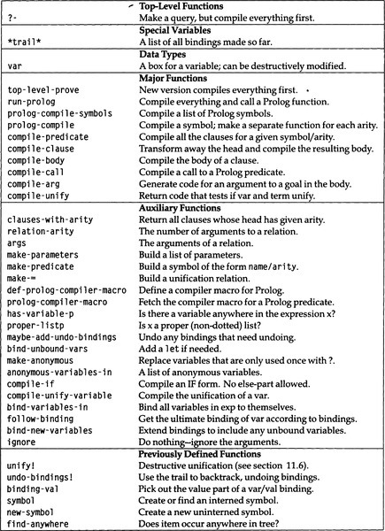

|
paip-ru
1
|
В конце главы 11 было представлено новое, более эффективное представление для логических переменных. Было бы разумно построить новую версию интерпретатора Пролога, включающую это представление. Однако глава 9 научила нас, что компиляторы работают быстрее, чем интерпретаторы, и их не так уж сложно построить. Таким образом, в этой главе будет представлен компилятор Пролога, который преобразует Пролог в Лисп.
Каждый предикат Пролога будет преобразован в функцию Лиспа, и мы примем соглашение, согласно которому предикат, вызываемый с другим числом аргументов, является другим(отличающимся от предыдущего) предикатом. Если символ p может быть вызван с одним или двумя аргументами, нам понадобятся две функции Лиспа для реализации двух предикатов. Следуя традиции Пролога, они будут называться p/1 и p/2.
Следующий шаг - решить, как должен выглядеть сгенерированный код Lisp. Он должен объединить/унифицировать заголовок каждого предложения напротив аргументов, и, если объединение/унификация завершится успешно, он должен вызвать предикаты в теле. Трудность состоит в том, что нужно помнить о точках выбора. Если вызов предиката в первом предложении завершился неудачно, мы должны иметь возможность вернуться ко второму предложению и повторить попытку.
Это можно сделать, передав успешное продолжение в качестве дополнительного аргумента каждому предикату. Это продолжение представляет собой цели, которые остаются нерешенными, аргумент функции prove other-goals(другие цели). Для каждого предложения в предикате, если все цели в предложении выполнены, мы должны вызвать успешное продолжение. Если цель не удается/не достигается, мы не делаем ничего особенного; мы просто переходим к следующему предложению. Есть одно осложнение: после неудачи мы должны отменить все привязки, сделанные unify!. Рассмотрим пример. Предложения
можно скомпилировать в это:
` (if (and (unify! ?arg1 'Robin) (unify! ?arg2 'cats))`
(if (unify! ?argl 'Sandy)
(if (unify! ?argl 'Kim)
В первом предложении мы просто проверяем два аргумента и, если унификации успешны, вызываем продолжение напрямую, потому что первое предложение не имеет тела. Во втором предложении рекурсивно вызывается likes/2, чтобы увидеть, нравятся ли ?arg2 кошки(cats). Если это удалось, то исходная цель достигнута, и вызывается продолжение cont. В третьем предложении мы должны снова рекурсивно вызвать likes/2, на этот раз попросив проверить, нравится ли ?arg2 Lee. Если эта проверка прошла успешно, будет вызвано продолжение. В этом случае продолжение включает в себя еще один вызов функции likes/2, чтобы проверить, нравится ли ?аrg2 Ким. Если это удастся, то, наконец, будет вызвано исходное продолжение, cont.
Напомним, что в интерпретаторе Пролога мы должны были добавить список ожидающих целей, other-goals, к целям в теле предложения. В компиляторе нет необходимости выполнять append. Вместо этого продолжение cont представляет other-goals(другие цели), а тело предложения представлено явными вызовами функций.
Обратите внимание, что приведенный ранее код для likes/2 устраняет некоторые ненужные вызовы unify!. Самая очевидная реализация будет иметь один вызов unify! для каждого аргумента. Таким образом, для второго предложения у нас будет код:
`(if (and (unify! ?argl 'Sandy) (unify! ?arg2 ?x))`
где нам понадобится подходящая привязка let для переменной ?x.
В этом разделе представлен компилятор, показанный на рис. 12.1. На верхнем уровне находится функция prolog-compile, которая принимает символ, просматривает предложения, определенные для этого символа, и группирует их по арности(количеству аргументов). Каждый символ/арность компилируется в отдельную функцию Лиспа с помощью compile-predicate.
| []() |
|---|

|
| Рисунок 12.1: Глоссарий для компилятора Prolog |
(ed: this should be a markdown table)
Сюда включены три служебные функции:
Следующим шагом является компиляция предложений для данного предиката с фиксированной арностью в функцию Lisp. На данный момент это будет сделано путем независимой компиляции каждого предложения и помещения их в лямбда с правильным списком параметров.
Теперь самое сложное: мы должны фактически сгенерировать код для предложения. Вот снова пример кода, желаемого для одного предложения. Начнем с установки в качестве цели простого кода:
` (if (and (unify! ?argl 'Kim) (unify! ?arg2 ?x)`
...)
но мы также рассмотрим возможность обновления до улучшенного кода:
(if (unify! ?arg1 'Kim)
`(likes/2 ?arg2 'Lee`
`#'(lambda () (likes/2 ?arg2 'Kim))))`
...)
Один из подходов - написать две функции, compile-head и compile-body, а затем объединить их в код (if head body) Такой подход может легко сгенерировать предыдущий код. Однако позволим себе немного забежать вперед. Если мы в конечном итоге захотим сгенерировать улучшенный код, нам понадобится некоторая связь между головой(head) и телом(body). Нам нужно знать, что голова решила не компилировать объединение/унификацию ?arg2 и ?x, но из-за этого тело должно будет заменить ?arg2 на ?x. Это означает, что функция compile-head концептуально возвращает два значения: код для головы(head) и указание замен, которые необходимо выполнить в теле(body). С этим можно справиться, явно манипулируя мноожественными значениями, но это кажется сложным.
Альтернативный подход - исключить compile-head и просто написать compile-body. Это возможно, если мы действительно выполним преобразование исходного кода в предложении. Вместо того, чтобы трактовать это предложение как:
преобразуем его в эквивалент:
Теперь аргументы в заголовке(head) предложения соответствуют аргументам в функции likes/2, поэтому нет необходимости создавать какой-либо код для заголовка(head). Это упрощает задачу за счет исключения compile-head, и это лучшая декомпозиция по другой причине: вместо добавления оптимизаций в compile-head мы добавим их в код в compile-body, который обрабатывает знак равно =. Таким образом, мы можем оптимизировать вызовы, которые пользователь делает к =, в дополнение к вызовам, вводимым преобразованием исходного кода.
Для ознакомления, последовательность вызовов функций окажется следующей:
где каждая функция вызывает те, что ниже, с отступом на один уровень. Мы уже определили первые две функции. Вот наша первая версия compile-clause:
Основная часть работы выполняется в compile-body, который немного сложнее. Есть три случая. Если тела нет, мы просто вызываем продолжение. Если тело начинается с вызова =, мы компилируем вызов unify!. В противном случае мы компилируем вызов функции, передавая соответствующее продолжение.
Однако на этом этапе стоит подумать о будущем. Если мы хотим трактовать сейчас = специально, мы, вероятно, захотим позже обработать другие цели специально. Поэтому вместо явной проверки для = мы будем выполнять управляемую данными диспетчеризацию, ища любой предикат, к которому привязано свойство prolog-compiler-macro. Как и макросы компилятора Лиспа, макрос может не справиться с поставленной задачей. Мы примем соглашение, согласно которому возврат :pass означает, что макрос решил не обрабатывать это и следовательно, он должен быть скомпилирован как обычная цель.
Все, что остается, это compile-arg, функция для компиляции аргументов в цели для тела предложения. Следует рассмотреть три случая, как показано ниже при компиляции аргумента q:
| []() | |
|---|---|
1 (<- (p ?x) (q ?x)) | (q/1 ?x cont) |
2 (<- (p ?x) (q (f a b))) | `(q/1 '(f a b) cont) <tr><td>3 (<- (p ?x) (q (f ?x b)))<td>(q/1 (list 'f ?x 'b) cont)` |
В случае 1 аргументом является переменная, и она компилируется как есть. В случае 2 аргумент - это постоянное выражение (без переменных), которое компилируется в цитируемое(quote) выражение. В случае 3 аргумент содержит переменную, поэтому мы должны сгенерировать код, который строит выражение. Случай 3 фактически разделен на две части в списке ниже: одна компилируется в вызов list, а другая - в вызов cons. Важно помнить, что цель (q (f ?x b)) не включает вызов функции f. Скорее, она включает термин (f ?x b), который представляет собой просто список из трех элементов.
Посмотрим, как это работает. Мы рассмотрим следующие пункты:
Вот что дает нам prolog-compile:
(IF (UNIFY! ?ARG1 'ROBIN)
(IF (UNIFY! ?ARG2 'CATS)
(IF (UNIFY! ?ARG1 'SANDY)
(IF (UNIFY! ?ARG2 ?X)
(IF (UNIFY! ?ARG1 'KIM)
(IF (UNIFY! ?ARG2 ?X)
(IF (UNIFY! ?ARG1 ?ITEM)
(IF (UNIFY! ?ARG2 (CONS ?ITEM ?REST))
(IF (UNIFY! ?ARG1 ?ITEM)
(IF (UNIFY! ?ARG2 (CONS ?X ?REST))
В этой версии компилятора есть некоторые проблемы:
unify!.undo-bindings! определенное ранее требует в качестве аргумента индекса в массиве *trail*. Таким образом, нам нужно будет сохранять текущую вершину trail при входе в каждую функцию.?x, использовались без введения. Они должны быть привязаны к новым переменным.Отменить привязку просто: мы добавляем одну строку в compile-predicate, вызов функции might-add-undo-bindings. Эта функция вставляет вызов undo-bindings! после каждой неудачи(failure). Если есть только одно предложение, отмены не требуется, потому что предикат, расположенный выше в вызывающей последовательности, сделает это в случае неудачи(failure). Если есть несколько предложений, функция оборачивает все тело функции в let, которая фиксирует начальное значение указателя заполнения trail, так что привязки могут быть отменены в нужной точке. Точно так же мы можем решить проблему несвязанных переменных, заключив вызов bind-unbound-vars вокруг каждого скомпилированного предложения:
С этими улучшениями мы получили код для likes и member:
(IF (UNIFY! ?ARG1 'ROBIN)
(IF (UNIFY! ?ARG2 'CATS)
(UNDO-BINDINGS! OLD-TRAIL)
(IF (UNIFY! ?ARG1 'SANDY)
(IF (UNIFY! ?ARG2 ?X)
(UNDO-BINDINGS! OLD-TRAIL)
(IF (UNIFY! ?ARG1 'KIM)
(IF (UNIFY! ?ARG2 ?X)
(IF (UNIFY! ?ARG1 ?ITEM)
(IF (UNIFY! ?ARG2 (CONS ?ITEM ?REST))
(UNDO-BINDINGS! OLD-TRAIL)
(? ITEM (?))
(IF (UNIFY! ?ARG1 ?ITEM)
(IF (UNIFY! ?ARG2 (CONS ?X ?REST))
Это неплохо, хотя есть еще возможности для улучшения. Одно небольшое улучшение - устранение ненужных переменных. Например, ?rest в первом предложении member и ?x во втором предложении привязаны к новым переменным - результату вызова (?) - и затем используются только один раз. Сгенерированный код можно было бы немного упростить, просто поместив вызов (?) в нужную позицию(inline), а не связывая его результат с переменной и затем ссылаясь на эту переменную. Это изменение состоит из двух частей: обновление compile-arg для компиляции анонимной переменной встроенной(inline) и изменение макроса <- так, чтобы он преобразовывал все переменные, которые появляются только один раз в предложении, в анонимные переменные:
Найти анонимные переменные непросто. Следующая функция хранит два списка: переменные, которые были обнаружены один раз, и переменные, которые были обнаружены дважды или более. Затем для обхода дерева используется локальная функция walk, рекурсивно рассматривая компоненты каждой cons-ячейки и обновляя два списка при обнаружении каждой переменной. Следует помнить об использовании локальных функций, а также об альтернативе, обсуждаемой в упражнении 12.23 на стр. 428.
Теперь member компилируется в это:
(LET ((OLD-TRAIL (FILL-POINTER *TRAIL*)))
(LET ((?ITEM (?)))
(IF (UNIFY! ?ARG1 ?ITEM)
`(IF (UNIFY!
?ARG2 (CONS ?ITEM (?)))`
`(FUNCALL CONT))))` `(UNDO-BINDINGS!
OLD-TRAIL)`
(IF (UNIFY! ?ARG1 ?ITEM)
(IF (UNIFY! ?ARG2 (CONS (?) ?REST))
Теперь перейдем к усовершенствованию compile-unify. Напомним, что мы хотим исключить определенные вызовы unify!, Чтобы, например, первое предложение member:
компилируется в:
(IF (UNIFY! ?ARG1 ?ITEM)
(IF (UNIFY! ?ARG2 (CONS ?ITEM (?)))
когда оно могло бы скомпилироваться в более эффективный:
(IF (UNIFY! ?ARG2 (CONS ?ARG1 (?)))
Устранение объединения/унификации одной цели в дальнейшем отразится и на других целях, поэтому нам нужно будет отслеживать выражения, которые были объединены/унифицированы вместе. У нас есть выбор дизайна. Либо compile-unify может изменять глобальную переменную состояния, либо возвращать несколько значений. На основании того, что глобальные переменные беспорядочны, мы делаем второй выбор: compile-unify принимает список привязок в качестве дополнительного аргумента и возвращает два значения: фактический код и обновленный список привязок. Мы ожидаем, что для работы с этими множественными значениями придется изменить другие связанные функции.
Когда в нашем примере сначала вызывается compile-unify, её просят объединить/унифицировать ?argl и ?item. Мы хотим, чтобы она возвращала не код (точнее, тривиально верный тест t). Для второго значения она должна вернуть новый список привязок с ?item, привязанным к ?arg1. Эта привязка будет использоваться для замены ?item на ?arg1 в последующем коде.
Как мы узнаем, что нужно привязать ?item к ?arg1, а не наоборот? Поскольку ?arg1 уже привязан к чему-то - значению, переданному в member. Мы не знаем, что это за значение, но мы не можем его игнорировать. Таким образом, в исходном списке привязки должно быть указано, что параметры к чему-то привязаны. Простое соглашение - привязать параметры к самим себе. Таким образом, исходный список привязки будет:
В предыдущей главе (страница 354) мы видели, что привязка переменной к самой себе может привести к проблемам; нам придется быть осторожными.
Помимо устранения объединения/унификации новых переменных с параметрами, можно сделать еще несколько улучшений. Например, унификации, включающие только константы, могут быть выполнены во время компиляции. Вызов (= (f a) (f a)) всегда успешен, а (= 3 4) всегда терпит неудачу. Кроме того, объединение/унификация двух cons-ячеек может быть разбита на компоненты во время компиляции: (= (f ?x) (f a)) сокращается до (= ?x a) и (= f f), где последний тривиально успешен(истинен). Мы даже можем выполнить проверку некоторых событий во время компиляции: (= ?x (f ?x)) должно завершиться неудачей(fail).
В следующей таблице перечислены эти улучшения вместе с разбивкой по случаям объединения/унификации связанной переменной (?arg1) или несвязанной переменной (?x) с другим выражением. Первый столбец - это вызов унификации, второй - сгенерированный код, а третий - привязки, которые будут добавлены в результате вызова:
| Unification | Code | Bindings | |
|---|---|---|---|
| 1 | (= 3 3) | t | - |
| 2 | (= 3 4) | nil | - |
| 3 | (= (f ?x) (?p 3)) | t | (?x . 3) (?p . f) |
| 4 | (= ?arg1 ?y) | t | (?y . ?arg1) |
| 5 | (= ?arg1 ?arg2) | (unify! ?arg1 ?arg2) | (?arg1 . ?arg2) |
| 6 | (= ?arg1 3) | (unify! ?arg1 3) | (?arg1 . 3) |
| 7 | (= ?arg1 (f ? y)) | (unify! ?arg1 . . . ) | (?y . ?y) |
| 8 | (= ?x ?y) | t | (?y . ?y) |
| 9 | (= ?x 3) | t | (?x . 3) |
| 10 | (= ?x (f ? y)) | (unify! ?x . . . ) | (?y . ?y) |
| 11 | (= ?x (f ? x)) | nil | - |
| 12 | (= ?x ?) | t | - |
Из этой таблицы мы можем создать нашу новую версию compile-unify. Первая часть довольно проста. Она заботится о первых трех случаях в этой таблице и обеспечивает вызов compile-unify-variable с переменной в качестве первого аргумента для остальных случаев.
Следующая функция compile-unify-variable - одна из самых сложных, которые мы видели. Для каждого аргумента мы смотрим, есть ли у него привязка (локальные переменные xb иyb), а затем используем привязки, чтобы получить значение каждого аргумента (x1 и y1). Обратите внимание, что либо для несвязанной переменной, либо для переменной, привязанной к самой себе, x будет равняться x1 (и то же самое для y и y1). Если любая из пар значений не эквивалентна, мы должны использовать новые (x1 или y1), и предложение с комментарием deref делает это. После этого мы просто рассмотрим случаи/варианты по одному. Оказалось, что было проще немного изменить порядок, чем в предыдущей таблице, но каждое предложение снабжено соответствующим номером:
Найдите время, чтобы понять, как работает эта функция. Затем переходите к следующим вспомогательным функциям:
Теперь нам нужно интегрировать новый compile-unify в остальную часть компилятора. Проблема в том, что новая версия принимает дополнительный аргумент и возвращает дополнительное значение, поэтому все вызывающие его функции должны быть изменены. Давайте еще раз посмотрим на последовательность вызовов:
Во-первых, спускаясь вниз, мы видим, что compile-arg должна принимать список привязок в качестве аргумента, чтобы она могла искать и подставлять соответствующие значения. Но она не изменяет список привязок, поэтому она все равно возвращает одно значение:
Теперь, поднимаясь вверх, compile-body надо взять список привязок и передать его различным функциям:
Функция bind-new-variables принимает любые переменные, упомянутые в цели, которые еще не были связаны, и связывает эти переменные с собой. Это потому, что цель, какой бы она ни была, может связывать ее аргументы.
Одна из функций, которую необходимо изменить, чтобы принять список привязки, - это макрос компилятора для =:
Последний шаг вверх - изменить compile-clause так, чтобы она запускала все, передавая compile-body список привязки со всеми параметрами, привязанными к себе:
Наконец, мы видим плоды наших усилий:
(IF (UNIFY! ?ARG2 (CONS ?ARG1 (?)))
(UNDO-BINDINGS! OLD-TRAIL)
(IF (UNIFY! ?ARG2 (CONS (?) ?REST))
(IF (UNIFY! ?ARG1 'ROBIN)
(IF (UNIFY! ?ARG2 'CATS)
(UNDO-BINDINGS! OLD-TRAIL)
(IF (UNIFY! ?ARG1 'SANDY)
(UNDO-BINDINGS! OLD-TRAIL)
(IF (UNIFY! ?ARG1 'KIM)
Можно ли еще раз улучшить compile-unify? Если мы будем настаивать на том, чтобы он вызывал unify!, кажется, что его нельзя сделать намного лучше. Однако мы могли бы улучшить его, фактически скомпилировав unify!. Это ключевая идея в абстрактной машине Уоррена, или WAM(Warren Abstract Machine), которая является наиболее часто используемой моделью для компиляторов Пролога.
Мы вызываем unify! в четырех случаях (5, 6, 7 и 10), и в каждом случае первый аргумент является переменной, и мы кое-что знаем о втором аргументе. Но первое, что делает unify! - это избыточно проверяет, является ли первый аргумент переменной. Мы могли бы исключить ненужные тесты, вызвав более специализированные функции, а не универсальную функцию unify!. Рассмотрим этот вызов:
(unify! ?arg2 (cons ?arg1 (?)))
Если ?arg2 является несвязанной переменной, этот код подходит. Но если ?arg2 - постоянный атом, мы должны немедленно выйти с ошибкой(fail), не позволяя cons и ? генерировать мусор. Мы могли бы изменить тест на:
(unify-first! ?arg2 ?arg1)
(unify-rest! ?arg2 (?)))
с подходящими определениями упомянутых здесь функций. Это изменение должно ускорить время выполнения и ограничить количество генерируемого мусора. Конечно, это удлиняет сгенерированный код, так что это может замедлить работу, если программа в конечном итоге будет тратить слишком много времени на передачу кода процессору.
** Упражнение 12.1 [h] ** Напишите определения для consp-or-variable-p, unify-first! и unify-rest!, и измените компилятор для генерации кода, подобного описанному ранее. Вы можете посмотреть функцию compile-rule в раздел 9.6, начиная с страницы 300. Эта функция скомпилировала вызов pat-match в отдельные тесты; теперь мы хотим сделать то же самое для unify!. Выполните несколько тестов, чтобы сравнить измененный компилятор с исходной версией.
Exercise 12.2 [h] We can gain some more efficiency by keeping track of which variables have been dereferenced and calling an appropriate unification function: either one that dereferences the argument or one that assumes the argument has already been dereferenced. Implement this approach.
Упражнение 12.3 [m] Какой код создается для (= (f (g ?x) ?y) (f ?y (?p a)))? Какой более эффективный код представляет ту же унификацию? Насколько легко изменить компилятор, чтобы получить более эффективный результат?
Упражнение 12.4 [h] Оглядываясь назад, кажется, что привязка переменных к самим себе, как в (?argl . ?argl), была не такой уж хорошей идеей. Это усложняет значение привязок и запрещает нам использовать существующие инструменты. Например, для случая 11 мне пришлось использовать find-anywhere вместо occur-check, потому что occur-check ожидает незацикленный список привязок. Но функция find-anywhere не так хорошо выполняет свою работу, как occur-check. Напишите версию compile-unify, которая возвращает три значения: код, незацикленный список привязки и список переменных, которые привязаны к неизвестным значениям.
Упражнение 12.5 [h] Альтернативой предыдущему упражнению является отказ от использования списков привязки во всех случаях. Вместо этого мы могли бы передать список классов эквивалентности, то есть список списков, где каждый подсписок содержит один или несколько элементов, которые были объединены/унифицированы. При таком подходе начальный список классов эквивалентности будет ((?arg1) (?arg2)). После объединения/унификации ?arg1 с ?x, ?arg2 с ?arg2 и ?x с 4, список будет ( (4 ?arg1 ?x) (?arg2 ?y)). Это предполагает соглашение о том, что канонический член класса эквивалентности (тот, который будет заменен всеми остальными) идет первым. Реализуйте этот подход. Какие у него преимущества и недостатки?
Компилятор может преобразовывать Пролог в Лисп, но это не принесет нам пользы, если мы не сможем удобно организовать компиляцию правильных отношений Пролога и вызвать правильные функции Лиспа. Другими словами, мы должны интегрировать компилятор с макросами <- и ?. Удивительно, но нам вообще не нужно менять эти макросы. Вместо этого мы изменим функции, которые вызывают эти макросы. Когда вводится новое предложение, мы вводим предикат предложения в список *uncompiled*. Это однострочное дополнение к add-clause:
Теперь, когда делается запрос, макрос ?- заменяется вызовом top-level-proof. Список целей в запросе вместе с целью show-prolog-vars добавляется в качестве единственного предложения. для отношения top-level-query. Затем этот запрос, вместе с любыми другими, которые находятся в некомпилированном списке, компилируется. Наконец, вызывается вновь скомпилированная функция запроса верхнего уровня.
Обратите внимание, что на верхнем уровне нам не нужно продолжение, чтобы что-то делать. Произвольно мы решили передать функцию ignore, которая определена так, чтобы игнорировать свои аргументы. Эта функция полезна во многих местах; некоторые программисты объявляют её встроенной и затем используют вызов ignore вместо объявления(декларации) ignore:
Соглашение о вызовах компилятора отличается от интерпретатора, поэтому необходимо переопределить примитивы. Старое определение примитива show-prolog-vars имело три параметра: список аргументов цели, список привязки и список ожидающих целей. Новое определение show-prolog-vars/2 также имеет три параметра, но это просто совпадение. Первые два параметра - это два отдельных аргумента цели: список имен переменных и список значений переменных. Последний параметр - функция продолжение. Чтобы продолжить, мы вызываем эту функцию, но в случае неудачи мы переходим к точке перехвата, установленной в top-level-prove.
Имея эти определения, мы можем вызвать компилятор автоматически, просто сделав запрос с макросом ?-.
Упражнение 12.6 [m] Предположим, вы определяете предикат p, который вызывает q, а затем определяете q. В некоторых реализациях Lisp, когда вы делаете запрос типа (?- (p? x)), вы можете получить предупреждающее сообщение типа "function q/1 undefined" перед получением правильного ответа. Проблема в том, что каждая функция компилируется отдельно, поэтому предупреждения, обнаруженные во время компиляции p/1, будут выводиться сразу, даже если функция q/1 будет определена позже. В ANSI Common Lisp есть способ отложить вывод предупреждений до тех пор, пока не будет выполнена серия компиляций: завершите компиляцию макросом with-compilation-unit. Даже если ваша реализация не предоставляет этот макрос, он может предоставлять те же функции под другим именем. Выясните, определен ли уже в вашей реализации with-compilation-unit или его можно определить.
Наш скомпилированный код Prolog запускает головоломку зебра за 17,4 секунды, что в 16 раз больше, чем у интерпретированной версии, со скоростью 740 LIPS.
Другой популярный тест - это обратная функция Lisp, которую мы можем закодировать как отношение rev:
rev использует отношение concat, которое означает конкатенацию, (concat ?a ?b ?c) истинно, когда ?a, объединенное с ?b, дает ?c. Это родственное имя предпочтительнее других процедурных имен, таких как append. Но rev очень похож на следующие определения Лиспа:
Обе версии неэффективны. Можно написать итеративную версию reverse, которая не требует дополнительных затрат и является хвосто-рекурсивной:
Пролог irev эквивалентен этой программе на Лиспе:
В следующей таблице показано время в секундах для выполнения этих подпрограмм в списках длиной 20 и 100, как для Пролога, так и для Лиспа, как интерпретируемых, так и скомпилированных. (Только скомпилированный Lisp может выполнить rev для списка из 100 элементов, не исчерпывая пространства стека.) Также включены времена для головоломки "зебра", хотя версии этой программы на Lisp не существует.
| Problem | Interp. Prolog | Comp. Prolog | Speed-up | Interp. Lisp | Comp. Lisp |
|---|---|---|---|---|---|
zebra | 278.000 | 17.241 | 16 | - | - |
rev 20 | 4.24 | .208 | 20 | .241 | .0023 |
rev 100 | - | - | - | - | .0614 |
irev 20 | .22 | .010 | 22 | .028 | .0005 |
irev 100 | 9.81 | .054 | 181 | .139 | .0014 |
Этот тест слишком мал, чтобы быть окончательным, но в этих примерах компилятор Prolog в 16–181 раз быстрее интерпретатора Prolog, немного быстрее, чем интерпретируемый Lisp, но все же в 17–90 раз медленнее, чем скомпилированный Lisp. Это говорит о том, что интерпретатор Пролога не может использоваться в качестве практического инструмента программирования, но компилятор Пролога может.
Прежде чем двигаться дальше, интересно отметить, что Пролог автоматически предоставляет необязательные аргументы. Хотя не существует специального синтаксиса для необязательных аргументов, часто используется соглашение о наличии двух версий отношения: одной с n аргументами и одной с *n -* 1. Единственное предложение для случая *n -* 1 обеспечивает отсутствующий и, следовательно, "необязательный" аргумент. В следующем примере irev/2 можно рассматривать как версию irev/3, в которой отсутствует необязательный аргумент ().
Это примерно эквивалентно следующей версии Лиспа:
Точно так же, как компилятору Lisp нужны машинные инструкции для ввода/вывода, арифметики и т.п., наша система Prolog должна иметь возможность выполнять определенные примитивные действия. Для интерпретатора Пролога примитивы были реализованы с помощью символов функций. Когда интерпретатор отправлялся за списком предложений, если вместо этого он получал функцию, он вызывал эту функцию, передавая ей аргументы в текущее отношение, текущие привязки и список неудовлетворенных целей. Для компилятора Prolog примитивы могут быть установлены просто путем написания функции Lisp, которая соблюдает соглашение о принятии продолжения в качестве последнего аргумента и имеет имя в форме symbol/arity(символ/аность) Например, вот простой способ обработки ввода и вывод:
(if (unify! exp (read))
Вызов (write ?x) всегда будет успешным, поэтому всегда будет вызываться продолжение. Точно так же можно использовать (read ?x) для чтения значения и объединения/унификации его с ?x. Если ?x не связан, это то же самое, что присвоение значения. Однако также можно выполнить вызов типа (read (?x + ?y)), который будет успешным только в том случае, если вход представляет собой список из трех элементов с + в середине. Это простое расширение для определения read/2 и write/2 как отношений, указывающих, какой поток использовать. Чтобы сделать это полезным, нужно определить open/2 как отношение, которое принимает pathname(путь) в качестве одного аргумента и возвращает поток в качестве другого. При желании могут поддерживаться и другие необязательные аргументы.
Примитив nl выводит новую строку:
Мы предоставили специальную поддержку для предиката унификации, =. Однако мы могли бы значительно упростить компилятор, имея простое определение для =/2:
(if (unify! ?arg1 ?arg2)
Фактически, если мы дадим нашему компилятору единственное предложение:
(<- (= ?x ?x))
он производит именно этот код для определения =/ 2. Есть и другие предикаты равенства, о которых стоит побеспокоиться. Предикат = =/2 больше похож на equal в Лиспе. Он не объединяет/унифицирует, а вместо этого проверяет равенство двух структур по своим элементам. Переменная считается равной(equal) только самой себе. Вот реализация:
`но с разыменованием? Если так, то получится. "
Один из самых важных примитивов - это call. Как и funcall в Лиспе, call позволяет нам создать цель, а затем попытаться ее доказать.
Эта версия call выдаст ошибку времени выполнения, если цель не инстанцируется для списка, первый элемент которого является правильно определенным предикатом; можно проверить это и молча потерпеть неудачу, если нет определенного предиката. Вот пример call, в котором цель законна:
Теперь, когда у нас есть call, можно реализовать много нового. Вот логические связки and и or:
Обратите внимание, что это только бинарные связки, а не n-арные специальные формы, используемые в Лиспе. Кроме того, это определение сводит на нет большую часть преимуществ компиляции. Цели внутри and или or будут интерпретироваться с помощью call, а не компилироваться.
Мы также можем определить not или, по крайней мере, нормальный Пролог not, который сильно отличается от логического not. Фактически, в некоторых диалектах not пишется +, что предполагается как ⊬, то есть "не может быть производным". Интерпретация состоит в том, что если цель G не может быть доказана, то (not G) истинно. Логически существует разница между истинным и неизвестным (not G), но игнорирование этой разницы делает Prolog более практичным языком программирования. См. Lloyd 1987 для получения дополнительной информации о формальной семантике отрицания в Прологе.
Вот реализация not/1. Поскольку он должен управлять trail, и у нас могут быть другие предикаты, которые захотят сделать то же самое, мы упакуем то, что было сделано в might-add-undo-bindings в макрос with-undo-bindings:
` collect '(undo-bindings! old-trail)`
"Отрицание неудачей: Если вы не можете доказать, что G.
тогда (not G) верно".
Вот пример, когда not работает нормально:
Теперь посмотрим, что произойдет, если мы просто изменим порядок двух целей:
Первый пример завершается успешно, если только ?x не привязан к b. Во втором примере ?x не cвязан в начале, поэтому (= ?x b ) завершается успешно, not терпит неудачу и member цель никогда не достигается. Таким образом, наша реализация not имеет последовательную процедурную интерпретацию, но она не эквивалентна декларативной интерпретации, обычно применяемой для логического отрицания. Обычно можно было бы ожидать, что a и c будут допустимыми решениями запроса, независимо от порядка целей.
Одно из фундаментальных различий между Prolog и Lisp заключается в том, что Prolog является реляционным: вы можете легко выражать индивидуальные отношения. Lisp, с другой стороны, хорошо выражает коллекции вещей в виде списков. Пока у нас нет способа сформировать коллекцию объектов, удовлетворяющих отношению в Прологе. Мы можем легко перебирать объекты; мы просто не можем собрать их вместе. Примитивный bagof - это один из способов сбора данных. В общем, (bagof ?x (p ?x) ?bag) объединяет ?bag со списком всех ?x-ов, которые удовлетворяют (p ?x). Если таких ?x-ов нет, то вызов bagof не выполняется. A bag - это неупорядоченная коллекция, в которой разрешены дубликаты. Например, bag {a, b, a} такая же, как bag {a, a, b}, но отличается от {a, b}. Bags контрастируют с sets, которые представляют собой неупорядоченные коллекции без дубликатов. Набор(set) {a, b} такой же, как набор(set) {a, b}. Вот реализация bagof:
;; Ex: Assume (p 1) (p 2) (p 3). Then:
(unify! resuit (nreverse answers)))
Ниже мы используем bagof, чтобы собрать список всех, кого любит Сэнди(Sandy likes). Обратите внимание, что в результате получается bag, а не set: Сэнди появляется несколько раз.
В следующем примере мы формируем bag из каждого списка длиной три, в котором в качестве членов входят A и B:
Те, кто разочарован bag, содержащим несколько версий одного и того же ответа, могут предпочесть примитивный setof, который выполняет те же вычисления, что и bagof, но затем отбрасывает дубликаты.
;; Ex: Assume (p 1) (p 2) (p 3). Then:
(unify! resuit (delete-duplicates
Пролог поддерживает арифметические операции с оператором is. Например, (is ?x (+ ?y 1)) объединяет/унифицирует ?x со значением ?y плюс один. Это выражение не работает, если ?y не привязано, и выдает ошибку времени выполнения, если ?y не является числом. В нашей версии Пролога мы можем поддерживать не только арифметику, но и любое выражение Лиспа:
(unify! var (eval (deref-exp exp))))
Кроме того, мы могли бы также предоставить программисту Prolog доступ к функции unbound-var-p. Стандартное имя этого предиката - var/1:
Это примитив не работает, если какая-либо часть второго аргумента не связана. Однако есть выражения с переменными, которые можно решить, хотя и не прямым вызовом eval. Например, следующая цель может быть решена путем привязки ?x к 2:
Мы могли бы захотеть иметь более прямой доступ к Лиспу из Пролога. Проблема с is в том, что он требует проверки на наличие несвязанных переменных и вызывает eval для рекурсивного вычисления аргументов. В некоторых случаях мы просто хотим добраться до Лисп apply, не прибегая к страховочной сетке, предоставляемой is. Это делает примитив lisp. Излишне говорить, что lisp не является частью стандартного Пролога.
(unify! ?result (apply (first exp) (rest exp))))
Упражнение 12.7 [m] Определите примитив solve/1, который работает аналогично функции solve, используемой в student (страница 225). Решите, следует использовать в качестве аргумента одно уравнение или список уравнений.
Упражнение 12.8 [h] Предположим, у нас есть цель вида (solve (= 12 (* (+ ?x 1) 4))). Вместо того, чтобы манипулировать уравнением, когда во время выполнения вызывается solve/1, мы могли бы предпочесть выполнять часть работы во время компиляции, обрабатывая вызов, как если бы он был (solve (= ?x 2)). Напишите макрос компилятора Пролога для solve. Обратите внимание, что даже если вы определили макрос компилятора, вам все равно понадобится базовый примитив, потому что предикат может быть вызван через call/1. То же самое происходит в Лиспе: даже когда вы предоставляете макрос компилятора, вам все равно нужна фактическая функция в случае funcall или apply.
Упражнение 12.9 [h] Для какого из предикатов call, and, or, not илиrepeat можно использовать макросы компилятора? Напишите макросы компилятора для тех предикатов, которые могут его использовать.
Упражнение 12.10 [m] Вы могли заметить, что call/1 неэффективен по двум важным причинам. Сначала он вызывает make-predicate, который должен построить символ, добавляя строки, а затем искать строку в таблице символов Lisp. Измените make-predicate для сохранения символа предиката при его первом создании, чтобы он мог быстрее выполнять поиск при последующих вызовах. Вторая неэффективность - это вызов append. Измените весь компилятор так, чтобы аргумент продолжение шел первым, а не последним, что устраняет необходимость применения append в call.
Упражнение 12.11 [s] Примитив true/0 всегда выполняется успешно, а fail/0 всегда терпит неудачу. Определите эти примитивы. Подсказка: первая соответствует функции Common Lisp, а вторая - функции, уже определенной в этой главе.
Упражнение 12.12 [s] Можно ли написать = =/2 как список предложений, а не как примитив?
Упражнение 12.13 [m] Напишите версию deref-copy, которая обходит выражение аргумента только один раз.
В Лиспе можно писать программы с явным откатом(backtrack), хотя это может быть неудобно, если имеется более одной или двух точек возврата. В Прологе откат является автоматическим и неявным, но мы пока не знаем никакого способа избежать его. Существует две причины, по которым программист на Prolog может захотеть отключить откат. Во-первых, отслеживание точек отката требует времени и места. Программист, который знает, что у определенной проблемы есть только одно решение, должен иметь возможность ускорить вычисления, сказав программе не рассматривать другие возможные ответвления. Во-вторых, иногда простая логическая спецификация проблемы приводит к избыточным решениям или даже к некоторым непредвиденным решениям. Может случиться так, что простое сокращение пространства поиска, чтобы исключить некоторые отслеживания откатов, даст только желаемые ответы, в то время как реструктуризация программы, чтобы давать все и только правильные ответы, будет сложнее. Вот пример. Предположим, мы хотим определить предикат max/3, который выполняется, когда третий аргумент является максимумом из первых двух аргументов, где первые два аргумента всегда будут преобразованы в числа. Прямое определение:
Декларативно оно правильно, но с процедурной точки зрения вычисление отношения < является пустой тратой времени, если >= успешно: в этом случае < не может быть успешным. Символ сокращения/обрезки, записываемый !, Можно использовать, чтобы остановить бесполезные вычисления. Мы могли бы написать:
Обрезка в первом предложении говорит о том, что если первое предложение будет успешным, то никакие другие предложения не будут рассматриваться. Так что теперь второй пункт нельзя толковать самостоятельно. Скорее, он интерпретируется как "если первое предложение не выполняется, то второе из двух чисел является максимальным".
Как правило, сокращение/обрезка может происходить в любом месте предложения, а не только в конце. Хорошей декларативной интерпретации обрезки не существует, но процедурная интерпретация двояка. Во-первых, когда обрезка "выполняется" как цель, она всегда успешна. Но в дополнение к успеху она устанавливает барьер, который нельзя преодолеть последующим откатом. Обрезка служит для отключения отката как от целей справа от обрезки (в том же предложении), так и от предложений ниже обрезки (в том же предикате). Давайте посмотрим на более абстрактный пример:
При обработке первого предложения p откат может происходить свободно при попытке решить q и r. Как только r решен, встречается обрезка. С этого момента откат может происходить свободно при решении s иt, но Prolog никогда не будет откатываться за обрез в r, и второе предложение не будет рассматриваться. С другой стороны, если q или r завершились неудачно (до того, как произойдет обрезка), тогда Пролог перейдет ко второму предложению.
Теперь, когда цель сокращения ясна, давайте подумаем, как его следует реализовать. Мы рассмотрим немного более сложный предикат с переменными и несколькими разрезами:
Мы должны организовать это так, чтобы, как только мы возвращаемся к сокращению, цели больше не учитывались. В первом предложении, когда q / 1 не работает, мы хотим немедленно вернуться изp / 2, а не рассматривать второе предложение. Точно так же в первый раз, когда «s / 1» терпит неудачу, мы хотим вернуться из «p / 2», вместо того, чтобы рассматривать другие решения для «r / 1». Таким образом, нам нужен код, который выглядит примерно так:
(if (unify! arg2 'a)
(undo-bindings! old-trail)
(if (unify! arg2 'b)
Мы можем получить этот код, сделав одно изменение в compile-body: когда первая цель в теле (или то, что осталось от тела) является отрезанным символом, тогда мы должны сгенерировать progn, содержащий код для остальной части тела, за которой следует return-from компилируемого предиката. К сожалению, имя предиката недоступно для compile-body. Мы могли бы изменить compile-clause и compile-body, чтобы использовать имя предиката в качестве дополнительного аргумента, или мы могли бы привязать предикат как специальную переменную в compile-predicate. Я выбираю последнее:
Упражнение 12.14 [m] Учитывая приведенные ниже определения, выясните, что будет делать вызов test-cut и что он будет писать:
Другой способ использовать обрезку - это цикл repeat/fail(повтор/сбой). Повторение предиката определяет следующие два предложения:
Альтернативное определение примитива:
К сожалению, repeat - один из предикатов, которым злоупотребляют. В нескольких книгах по Прологу представлены такие программы:
Смысл состоит в том, что команды читаются по одной, а затем обрабатываются. Для каждой команды, кроме exit, процесс выполняет соответствующее действие и затем терпит неудачу. Это вызывает откат к цели repeat(повторения), и новая команда считывается и обрабатывается. Когда команда exit, процедура возвращается.
Есть две причины, почему это плохая программа. Во-первых, это нарушает принцип ссылочной прозрачности. Вещи, которые выглядят одинаково, должны быть одинаковыми, независимо от контекста, в котором они используются. Но здесь невозможно сказать, что четыре из шести целей в теле составляют цикл, а другие цели находятся вне цикла. Во-вторых, это нарушает принцип абстракции. Предикат должен быть понятен как отдельная единица. Но здесь процесс предиката можно понять только при рассмотрении контекста, в котором он вызывается: контекста, который требует его сбоя после обработки каждой команды. Как указывает Ричард О'Киф 1990, правильный способ написания этого предложения выглядит следующим образом:
Отступ четко указывает на пределы повторения цикла. Цикл завершается явным тестом, за которым следует отрезка, чтобы вызывающая программа не могла случайно вернуться(откатиться) в цикл после выхода. Лично я предпочитаю такой язык, как Lisp, где круглые скобки делают такие конструкции, как циклы, явными, а отступы могут выполняться автоматически. Но О'Киф показывает, что хорошо структурированные читаемые программы можно писать и на Прологе.
Конструкции if-then и if-then-else можно легко записать в виде предложений. Обратите внимание, что if-then-else использует обрезку для фиксации части then, если тест удовлетворен.
Обрезка может использоваться для реализации нелогического не. Следующие два предложения часто приводятся перед определением not. Наш компилятор успешно превращает эти два предложения в точно такой же код, который был приведен ранее для примитива not/1:
Система Prolog-In-Lisp, разработанная в этой главе, использует синтаксис Lisp, потому что она предназначена для встраивания в систему Lisp. Другие реализации Пролога, использующие синтаксис Лиспа, включают микро-Пролог, Символический Пролог и Пролог LMI.
Однако большинство систем Пролога используют синтаксис, близкий к традиционным математическим обозначениям. В следующей таблице сравнивается синтаксис "стандартного" Пролога с синтаксисом Пролога-в-Лиспе. Хотя в настоящее время над стандартизацией Пролога работает международный комитет, окончательный отчет еще не выпущен, поэтому разные диалекты могут иметь немного отличающийся синтаксис. Тем не менее, в большинстве реализаций используются обозначения, приведенные здесь. Они являются производными от Пролога, разработанного в Эдинбургском университете для DEC-10 Дэвидом Х. Д. Уоррен и его коллеги. Имена примитивов в последнем разделе также взяты из Эдинбургского Пролога.
| Prolog | Prolog-In-Lisp | |
|---|---|---|
| atom | lower | const |
| variable | Upper | ?var |
| anonymous | - | ? |
| goal | p(Var,const) | (p ?var const) |
| rule | p(X) :- q(X). | (<- (p ?x) (q ?x)) |
| fact | p(a). | (<- (p a)) |
| query | ?- p(X). | (?- (p ?x)) |
| list | [a,b,c] | (a b c) |
| cons | [a| Rest] | (a . ?rest) | | nil | [] | () | | and | p(X). q(X) | (and (p ?x) (q ?x)> | | or | P(X): q(X) | (or (p ?x) (q ?x)) | | not | \+ p(X) | (not (p ?x)) |
Мы переняли склонность Лиспа к спискам; термины состоят из атомов, переменных и заключений других терминов. В реальном Prolog есть cons-ячейки, но термины обычно строятся из структур, а не списков. Термин Пролога p(a, b) соответствует вектору Лиспа #(p/2 a b), а не списку (p a b). Меньшая часть реализаций Prolog использует совместное использование структур. В этом подходе каждый неатомарный термин представлен каркасом, который содержит заполнители для переменных и заголовок, который указывает на каркас, а также содержит переменные, которые будут заполнять заполнители . С разделяемой структуры просто сделать копию: просто скопируйте заголовок, независимо от размера скелета. Однако манипулирование терминами осложняется необходимостью отслеживать как скелет, так и заголовок. См. Boyer and Moore 1972 для получения дополнительной информации о совместном использовании структуры.
Еще одно важное отличие состоит в том, что настоящий Пролог использует эквивалент продолжений неудач, а не продолжений успехов. Никакого фактического продолжения в смысле замыкания не создается. Вместо этого, когда выбор сделан, адрес кода для следующего выбора помещается в стек. В случае неудачи из стека выскакивает следующий вариант. Это напоминает подход с откатом с использованием возможности Scheme call/cc, описанный на стр. 772.
Упражнение 12.15 [m] Предполагая подход, использующий стек продолжений неудач вместо продолжений успехов, покажите, как будет выглядеть код для p и member. Обратите внимание, что вам не нужно передавать продолжения сбоя; вы можете просто поместить их в стек, который вызовет top-level-prove. Как будет реализовано сокращение? Правильно ли мы сделали выбор, реализовав наш компилятор с продолжениями успехов, или было бы лучше продолжать неудачи?
As described in chapter 11, the idea of logic programming was fairly well understood by the mid-1970s. But because the implementations of that time were slow, logic programming did not catch on. It was the Prolog compiler for the DEC-10 that made logic programming a serious alternative to Lisp and other general-purpose languages. The compiler was developed in 1977 by David H. D. Warren with Fernando Pereira and Luis Pereira. See the paper by Warren (1979) and by all three (1977).
Unfortunately, David H. D. Warren's pioneering work on compiling Prolog has never been published in a widely accessible form. His main contribution was the description of the Warren Abstract Machine (WAM), an instruction set for compiled Prolog. Most existing compilers use this instruction set, or a slight modification of it. This can be done either through byte-code interpretation or through macroexpansion to native machine instructions. Aït-Kaci 1991 provides a good tutorial on the WAM, much less terse than the original (Warren 1983). The compiler presented in this chapter does not use the WAM. Instead, it is modeled after Mark Stickel's (1988) theorem prover. A similar compiler is briefly sketched by Jacques Cohen 1985.
Exercise 12.16 [m] Change the Prolog compiler to allow implicit calls. That is, if a goal is not a cons cell headed by a predicate, compile it as if it were a call. The clause:
should be compiled as if it were:
Exercise 12.17 [h] Here are some standard Prolog primitives:
get/1 Read a single character and unify it with the argument.put/1 Print a single character.nonvar/1, /=, /== The opposites of var, = and = = , respectively.integer/1 True if the argument is an integer.atom/1 True if the argument is a symbol (like Lisp's symbol p).atomic/1 True if the argument is a number or symbol (like Lisp's atom).listing/0 Print out the clauses for all defined predicates.listing/1 Print out the clauses for the argument predicate.Implement these predicates. In each case, decide if the predicate should be implemented as a primitive or a list of clauses, and if it should have a compiler macro.
There are some naming conflicts that need to be resolved. Terms like atom have one meaning in Prolog and another in Lisp. Also, in Prolog the normal notation is \= and \==, not /= and /==. For Prolog-In-Lisp, you need to decide which notations to use: Prolog's or Lisp's.
Exercise 12.18 [s] In Lisp, we are used to writing n-ary calls like (< 1 n 10 ) or (= x y z ). Write compiler macros that expand n-ary calls into a series of binary calls. For example, (< 1 n 10) should expand into (and (< 1 n) (< n 10)).
Exercise 12.19 [m] One feature of Lisp that is absent in Prolog is the quote mechanism. Is there a use for quote? If so, implement it; if not, explain why it is not needed.
Exercise 12.20 [h] Write a tracing mechanism for Prolog. Add procedures p-trace and p-untrace to trace and untrace Prolog predicates. Add code to the compiler to generate calls to a printing procedure for goals that are traced. In Lisp, we have to trace procedures when they are called and when they return. In Prolog, there are four cases to consider: the call, successful completion, backtrack into subsequent clauses, and failure with no more clauses. We will call these four cases call, exit, redo, and fail, respectively. If we traced member, we would expect tracing output to look something like this:
Exercise 12.21 [m] Some Lisp systems are very slow at compiling functions. KCL is an example; it compiles by translating to C and then calling the C compiler and assembler. In KCL it is best to compile only code that is completely debugged, and run interpreted while developing a program.
Alter the Prolog compiler so that calling the Lisp compiler is optional. In all cases, Prolog functions are translated into Lisp, but they are only compiled to machine language when a variable is set.
Exercise 12.22 [d] Some Prolog systems provide the predicate freeze to "freeze" a goal until its variables are instantiated. For example, the goal (freeze x (> x 0)) is interpreted as follows: if x is instantiated, then just evaluate the goal (> x 0), and succeed or fail depending on the result. However, if x is unbound, then succeed and continue the computation, but remember the goal (> x 0) and evaluate it as soon as x becomes instantiated. Implement freeze.
Exercise 12.23 [m] Write a recursive version of anonymous-variables-in that does not use a local function.
Answer 12.6 Here's a version that works for Texas Instruments and Lucid implementations:
Answer 12.9 Macros for and and or are very important, since these are commonly used. The macro for and is trivial:
The macro for or is trickier:
Answer 12.11true/0 is funcall : when a goal succeeds, we call the continuation, fail/0 is ignore: when a goal fails, we ignore the continuation. We could also define compiler macros for these primitives:
Answer 12.13
Answer 12.14 In the first clause of test-cut, all four calls to p will succeed via the first clause of p. Then backtracking will occur over the calls to (p c) and (p d). All four combinations of 1 and 2 succeed. After that, backtracking would normally go back to the call to (p b). But the cut prevents this, and the whole (test-cut) goal fails, without ever considering the second clause. Here's the actual output:
Answer 12.17 For example:
Answer 12.19 Lisp uses quote in two ways: to distinguish a symbol from the value of the variable represented by that symbol, and to distinguish a literal list from the value that would be returned by evaluating a function call. The first distinction Prolog makes by a lexical convention: variables begin with a question mark in our Prolog, and they are capitalized in real Prolog. The second distinction is not necessary because Prolog is relational rather than functional. An expression is a goal if it is a member of the body of a clause, and is a literal if it is an argument to a goal.
Answer 12.20 Hint: Here's how member could be augmented with calls to a procedure, prolog-trace, which will print information about the four kinds of tracing events:
(if (unify! ?arg2 (cons ?arg1 (?)))
(undo-bindings! old-trail)
(if (unify! ?arg2 (cons (?) ?rest))
The definition of prolog-trace is:
Answer 12.23
1.8.13